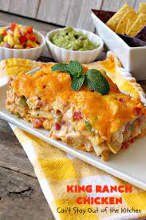

King Ranch Chicken

King Ranch Chicken Casserole
My ultimate comfort food! With a few shortcuts it comes together quickly, reheats well, and will feed several people.
You will need the following ingredients:
- 1 whole chicken, boiled and de-boned. I buy this already done from H-E-B
- 1 medium chopped onion
- 1 can of cream of mushroom soup
- 1 can of cream of chicken soup
- 1 can of Rotel. I recommend hot.
- 1/2 can of chicken broth
- 1 small package of corn tortillas
- 1 10 oz. package of grated sharp cheddar cheese. I will double this if making just for myself
Cooking instructions are as follows:
- Preheat oven to 350 degrees
- Mix onion, soups, broth, Rotel, and chicken in a bowl
- Grease large deep casserole dish
- Layer ingredients beginning with the corn tortillas cut into quarters. Then soup mixture, finally cheese.
- Repeat until soup is used up and finish with cheese on top
- Bake for 45 minutes to 1 hour.
- Enjoy!